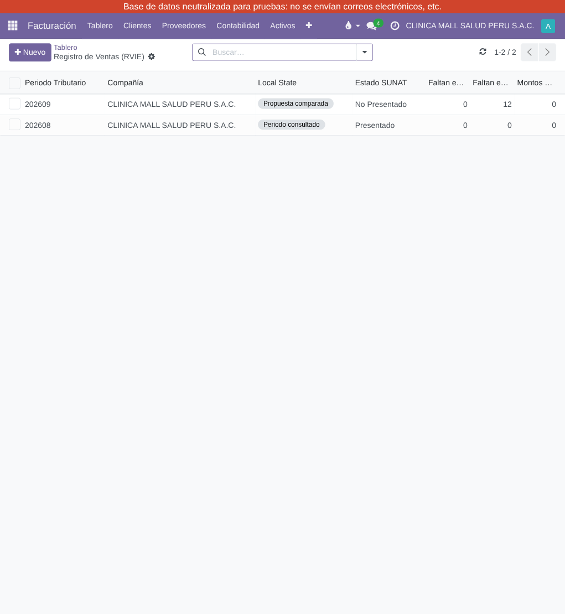
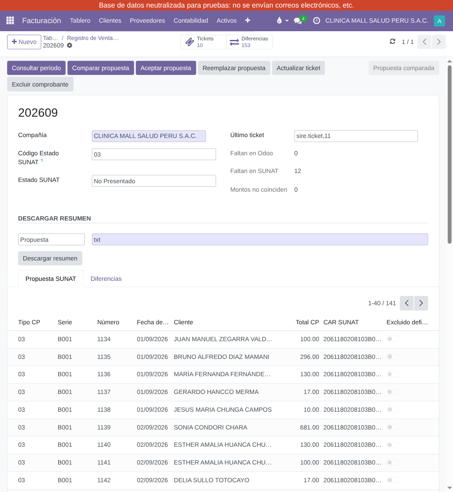
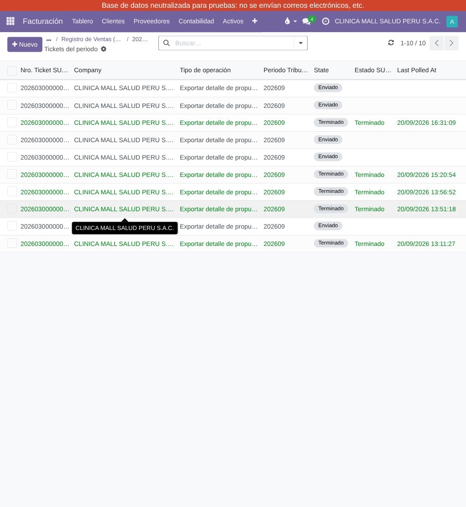
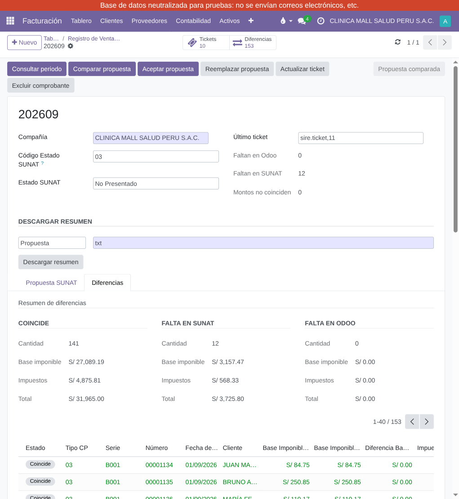

Secuencia regular para declarar un periodo tributario del Registro de Ventas e
Ingresos Electrónico (RVIE) con el módulo tgr_sire_rvie. Menú:
SIRE > Registro de Ventas (RVIE).
Tabla de contenidos
Crear (o abrir si ya existe) el registro del periodo tributario AAAAMM en
SIRE > Registro de Ventas (RVIE).

Lista de periodos RVIE, con el detalle de diferencias por periodo (Faltan en Odoo / Faltan en SUNAT / Montos no coinciden).
Trae el estado oficial de SUNAT (sunat_periodo_state_label: "Presentado" /
"No Presentado") y pasa local_state de draft a
checked.
Antes de comparar, verificar que todos los comprobantes de venta del periodo ya se
transmitieron electrónicamente a SUNAT. Un comprobante contabilizado pero aún "por
enviar" (edi_state = to_send) aparece como diferencia real ("Falta en
SUNAT") hasta que se envíe -- es el comportamiento esperado, no un error de la
comparación.
Crea el ticket de descarga de la propuesta SUNAT (servicio 5.18, asíncrono).

Formulario del periodo: barra de botones (Consultar periodo, Comparar propuesta, Aceptar propuesta, Reemplazar propuesta, Actualizar ticket, Excluir comprobante) y pestaña "Propuesta SUNAT" con el detalle descargado.
Se presiona (una o más veces, hasta que el ticket quede en estado "Terminado") para
consultar si SUNAT ya generó el archivo. Al terminar, el sistema automáticamente
descarga y parsea el archivo real, puebla la propuesta y cruza contra el registro de
ventas de Odoo. local_state pasa a compared.

Lista de tickets asociados al periodo, con su estado SUNAT ("Terminado", "Enviado") y fecha de última consulta.
Paso clave del contador. Se revisan los tres bloques de resumen (cantidad, base imponible, impuestos y total) y el detalle línea por línea:
Coincide: sin acción.Falta en SUNAT: comprobante en Odoo sin contraparte en la propuesta
SUNAT -- verificar envío electrónico pendiente, rechazo, o registro faltante.Falta en Odoo: comprobante en la propuesta SUNAT sin contraparte en
Odoo -- verificar comprobantes emitidos fuera de Odoo o pendientes de contabilizar.
Pestaña "Diferencias": resumen por Coincide / Falta en SUNAT / Falta en Odoo (cantidad, base imponible, impuestos, total) y detalle de líneas.
Según el resultado de la revisión:
local_state
pasa a proposal_accepted..zip de reemplazo vía el wizard;
actualizar el ticket hasta que quede "Terminado". local_state pasa a
replacement_uploaded.Solo habilitado desde proposal_accepted/replacement_uploaded.
Presenta el registro de ventas del periodo ante SUNAT. local_state pasa a
preliminary_registered. Bloqueado con los mensajes 2293/2294/2295 del
manual SUNAT si el estado no corresponde.
Disponibles en cualquier punto del flujo:
draft -> checked -> compared -+-> proposal_accepted -+-> preliminary_registered
+-> replacement_uploaded -+
error es un estado terminal alcanzable desde cualquier punto ante una
falla de comunicación o de negocio no atrapada por los guards locales.